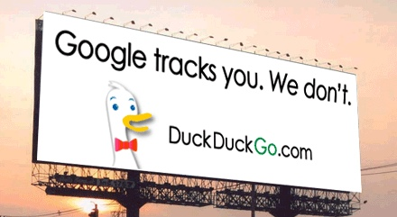
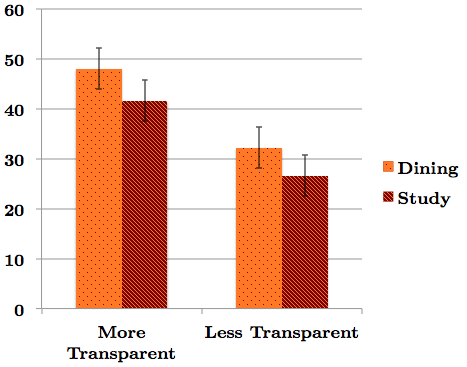
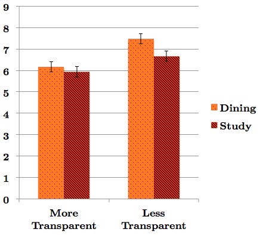
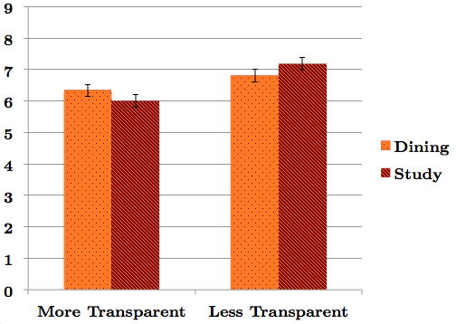
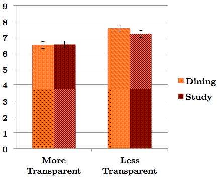
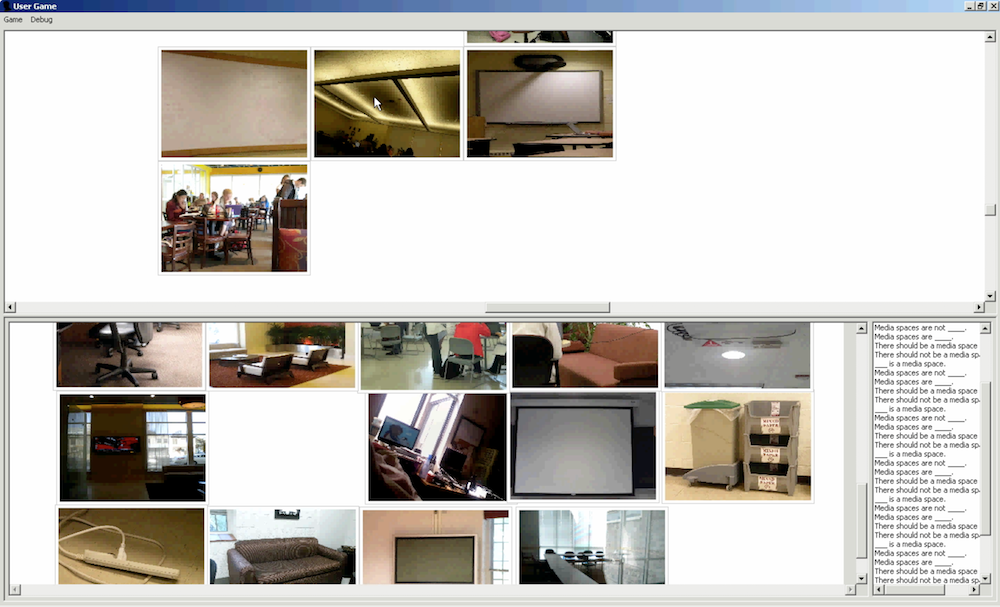
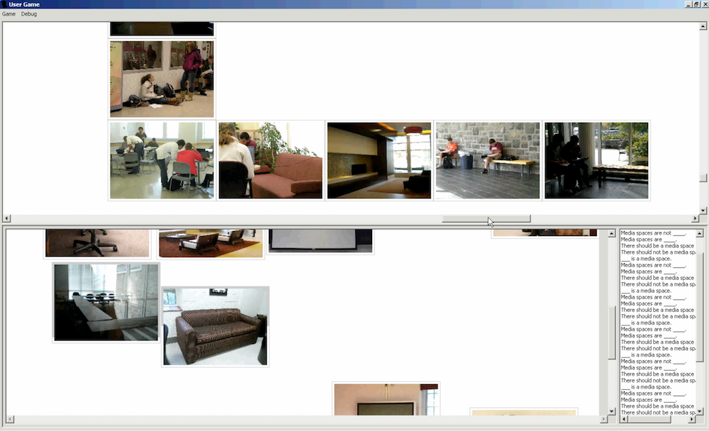
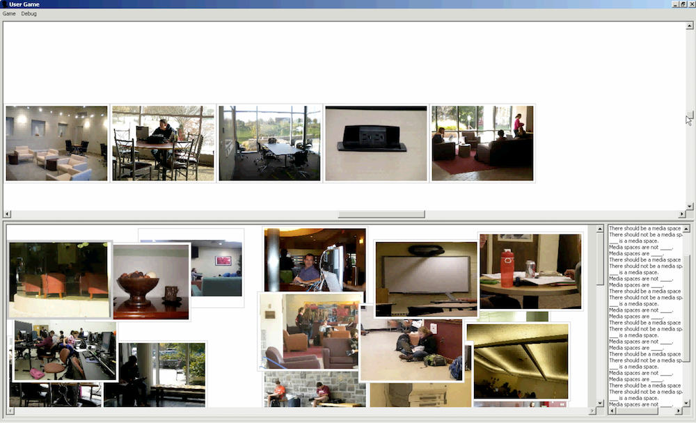

Working in groups can accomplish Great things.
- From a young age we teach teamwork
- When we get a bit older, we call it "collaboration"
- Eventually, we're trying to sell it as "synergy"


Group work is no panacea
Brooks reported that adding people to a late project only made it later.
Groups are complex
Sometimes a group that we view as nearly hopeless, manages to succeed.
Other time groups that are certain to succeed, ultimately fail.
Why?
What are the effects of varied transparency on idea generation in groups?
Why groups succeed or fail is a HUGE, complex problem.
Let's eat the elephant one byte at a time.
Overview of Related Work
In order to examine my Research Question, I reviewed the literature in four areas:
- Idea Generation in Groups
- Privacy
- Coordination
- Theory-Practice Gap
Related: Idea Generation in Groups
- Generating ideas in groups is less effective than individually
- Number of ideas generated
- Quality of ideas generated
- Even with trained collaborators
Related: Idea Generation in Groups (cont'd.)
Electronic Brainstorming
- production blocking
- social inhibition
- accountability
Related: Privacy
The concept of privacy has evolved to encompass the increasing portion of our lives lived online including
- work
- (social) networking
- play
- shopping
- love

Related: Privacy (cont'd.)
- privacy in the form of anonymity has helped alleviate social inhibition
- anonymity also harms accountability
- solitude facilitates our work on creative tasks
Related: Micro-coordination
"In successful discussions, participants have the means or instrumentality to coordinate and adjust the activity to meet their needs."
Related: Micro-coordination (cont'd.)
To facilitate participant discussion, and to provide a means for them to refer to objects in the system is to provide the participants with coordinative agency.
Related: Theory-Practice Gap
Many fields face challenges in implementing research findings in practice.
Even though there is overwhelming evidence that generating ideas in groups is less effective, it remains popular and desirable.
Related: Theory-Practice Gap (cont'd.)
Participatory Design gives us Design Games!
- rules for engaging with each other
- addresses social inhibition
- addresses accountability
- turn-taking
- production blocking
- artifacts
Related Work: The User Game
- Pile of pictures on a table
- Empty playing area
- Take turns
- place pictures
- tell User story/
Related Work: Summary
- idea generation in groups
- privacy
- coordination
- theory-practice gap
What are the effects of varied transparency on idea generation in groups?
Overview of Study Design
- Software Development
- Photography
- Data Collection
Study: Software
- Revive User Game
- Implement a version with More Transparency
Study: Software (cont'd.)
- undergrad CS student research assistants
- Cross-Platform: meet Cross-Platform
- TupleSpaces are challenging to use for heavily event-driven applications
Study: Photos
- undergrad psychology research assistants
- dining hall
- study lounge


Study: Procedures
Play it
- prop to aid instructions
- each person at a separate laptop
Study: Data Collection
Study: Data Collection (cont'd.)
- one camera facing each participant
- screen recording on each laptop
- post-session questionnaire
Study: Data Collection (cont'd.)
Post-session questionnaire with 4 themes:
- Ease of generating ideas
- Quality of ideas
- Social Inhibition
- Collaboration
Overview of Data Analysis
- Transcribe video from sessions
- Code video from sessions
- Study questionnaire results
Data Analysis: Transcriptions
- InqScribe
- Research Assistants
Data Analysis: Coding
Originally came up with a coding scheme with 6 codes:
- aesthetic
- place
- utility
- setting
- value
- sequence
Data Analysis: Coding (cont'd.)
Unable to reach consistent coding for:
- utility
- sequence
Data Analysis: Coding (cont'd.)
| Code | Examples | |
|---|---|---|
| Aesthetic | "...homey accent..." | "...a nice statue..." |
| Setting | "Oh, it’s the end of my day, I’m going to go get something to eat..." | "I’m walking to class, around Squires and my next class doesn’t start for 30 minutes..." |
| Value | "...but his girlfriend came into the dining center, and he remembered she was a vegetarian, and he wasn’t supposed to eat meat around her, so he went back to the salad bar to get a salad..." | "...it’s always good to take your trash away because dining halls are much more enjoyable when they’re clean." |
| Other Feature | "They need lockers so they can lock up their stuff." | "... nice places for people to sit ..." |
Data Analysis: Coding Results
From the coded data, I found that the number of contributions made in a session was higher in the More Transparent condition.
Result is marginally significant, statistically (F (3, 19) = 1.48, p < 0.0773).
Data Analysis: Coding Results (cont'd.)

Data Analysis: Post-session Questionnaire
From the questionnaire responses I made 3 primary findings:
- Extent other built on my ideas
- Frequency: others ideas capture my imagination
- Frequency: I build on others, out loud
Data Analysis: Post-session Questionnaire (cont'd.)
"On their turn, to what extent did others build on your ideas?"
t(3) = −2.13, p < 0.05
Data Analysis: Post-session Questionnaire
"How often did other people’s ideas capture your imagination?"
t(3) = −1.88, p < 0.0760
Data Analysis: Post-session Questionnaire
"On your turn, how often did you build on other people’s ideas out loud?"
t(3) = −2.08, p < 0.0513
Conclusion: Discussion
Analysis of Coded Transcripts
- More Transparency : More Contributions
Analysis of Questionnaire
- LESS Transparency : Others build on me MORE
- LESS Transparency : Others capture my imagination MORE
- LESS Transparency : I build on others MORE
Conclusion: Discussion (cont'd.)
From the literature in the field:
- People perceive
- Research Assistants
Data Analysis: Coding
Originally came up with a coding scheme with 6 codes:
- aesthetic
- place
- utility
- setting
- value
- sequence
Data Analysis: Coding (cont'd.)
Unable to reach consistent coding for:
- utility
- sequence
Data Analysis: Coding (cont'd.)
Data Analysis: Coding Results
From the coded data, I found that the number of contributions made in a session was higher in the More Transparent condition.
Result is marginally significant, statistically (F (3, 19) = 1.48, p < 0.0773).
Data Analysis: Coding Results (cont'd.)
Data Analysis: Post-session Questionnaire
From the questionnaire responses I made 3 primary findings:
- Extent other built on my ideas
- Frequency: others ideas capture my imagination
- Frequency: I build on others, out loud
Data Analysis: Post-session Questionnaire (cont'd.)
"On their turn, to what extent did others build on your ideas?"
t(3) = −2.13, p < 0.05
Data Analysis: Post-session Questionnaire
"How often did other people’s ideas capture your imagination?"
t(3) = −1.88, p < 0.0760
Data Analysis: Post-session Questionnaire
"On your turn, how often did you build on other people’s ideas out loud?"
t(3) = −2.08, p < 0.0513
A

B

C

What are the effects of varied transparency on idea generation in groups?